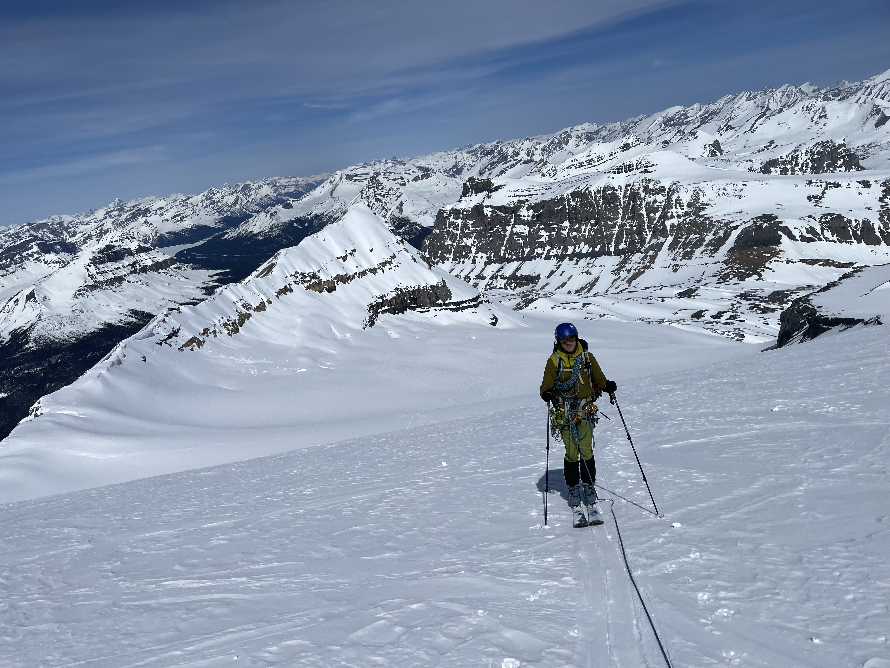
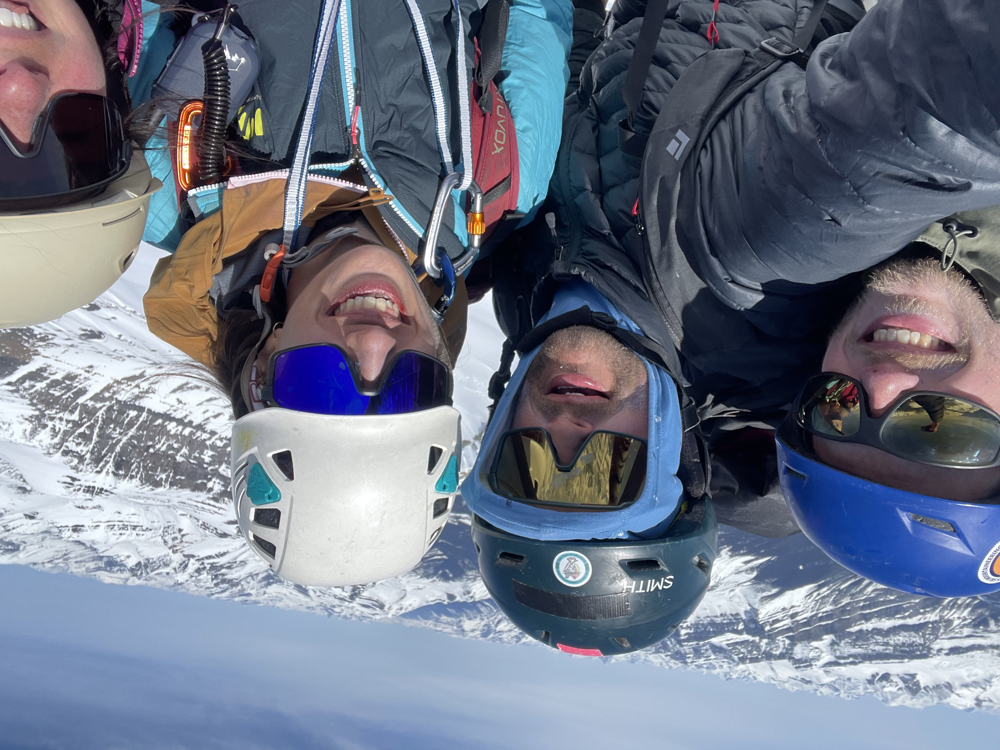

Mt Hector Ski Tour Trip Report
This is a worthwhile skitour if you are near Banff and want to explore the Icefields Parkway region. The skiing is mostly north-ish facing, so the snow holds up well. The slope angles are mostly 15 to 30 degrees, so you can lay out fun turns. And, on a clear day, the views are fantastic.
Conditions: Lake Louise — high of 20°C with 15 km/h winds.
Timeline
6:30 AM — Started skinning.
7:00 AM — Arrived at the base of the waterfall.
8:00 AM — Got above the waterfall into the basin.

9:30 AM — Above the first major slope; snack break at the base of Little Hector.
10:44 AM — Roped up for glacier travel.

1:00 PM — Left skis for the final climb.
2:00 PM — Summit.

4:30 PM — Back at the car.
Snow Conditions
Snow conditions were quite nice overall. Wet slides were our primary concern, especially given our slower-than-expected ascent. That said, you gain a lot of elevation on this route and the snow was firm at the summit. It softened up considerably around Little Hector, but we hadn't seen many signs of wet slides — though this would definitely be a concern on a warmer day.
The snow got fairly mushy below the waterfall on the way down. There's a decent risk of getting caught in a wet slide here, and the exposure above you is intimidating. Once you're in the gully, the shade holds the snow up well.
Route Notes
Getting past the waterfall took much longer than I expected. The snow was too hard to get an edge in — I'm on 108 underfoot Line Visions — but bootpacking didn't work either. The crust broke too easily into sugary, dry snow underneath, so you just postholed. Ski crampons were the way to go here.
Above the waterfall there's a bit of scrambling. On the way down, however, you can pick a ski line through and across the waterfall. Highly recommend this approach — as long as there isn't too much water, it's fast and felt much safer than downclimbing the rock sections. You could also set up a tree anchor and rappel if you wanted.
We had a 70 m rope, which was helpful for rappelling off the anchors on Hector. There are two sets of anchors. If you have a long enough rope you can do a single rappel, which saves a lot of time with a larger group.
Gear
Line Vision 108 (186 cm), Petzl Quark ice tool, crampons, ski crampons (essential for this route), 70 m rope. 2 L of water was sufficient.
Stats
Moving time: 3:31
Elevation 7,000 feet (not sure I believe this, but watch and phone gave the same estimate)
Distance: 9.2 miles
One More Thing
Wide skis are a real pain on hardpack. I knew this, but I'd always skied with folks on similar widths. Now I'm out with Europeans on skinny skis, and watching them hold an edge while skinning up hardpack is surpsingly frustrating.
Recent Thoughts: Everyone Who Is Gone Is Here by Jonathan Blitzer
I just finished Everyone Who Is Gone Is Here, Jonathan Blitzer's book on the humanitarian crisis in Central America and at the US border. I'll keep this fairly brief.
First, Blitzer does a commendable job diving into the lives of several immigrants and their stories. These stories were challenging to read, especially Juan Romagoza's account of being tortured at the hands of the Salvadoran government (often bankrolled by the US government). The book is worth reading for these stories alone.
The book did diverge from my expectations at times. Primarily, Blitzer gives little space to the United States' motivations for propping up these Central American governments. Having just read The Prize by Daniel Yergin, I gained a nuanced understanding of why the U.S. has engaged in specific interventions—the Mossadegh coup, for example. You read The Prize and you understand the decision-making behind that coup. You may disagree with the reasoning (it's easy to judge that decision fifty years later), but at least I understood the pressure the US government felt about letting the Iranian government fall into Soviet hands.
For Central America, I didn't get that from Blitzer's book. Now, I'm sure Blitzer would argue that's beyond the scope of the book and that, frankly, who cares about the Reagan administration's misguided strategies. Blitzer cares about the results, not the why behind the policy. But the book certainly does dive deeply into the people making policy decisions over the last twenty-five years. I would argue that if we, the readers, had time to learn about Rahm Emanuel's rants about immigration politics, Blitzer could have taken some time to discuss why the U.S. was engaged in such a counterproductive Latin America strategy. What were the goals? It likely boils down to stopping communism in our backyard, but I'm sure there are nuances here.
Other takeaways: Last year, I listened to Alejandro Mayorkas describe an almost memetic spread of the idea that the refugee program could be gamed by Latin Americans. While I am sure there is some truth to this "gaming the system" theory, if you read Blitzer's book, you realize it is a massive oversimplification. Blitzer convinced me that the reason we've shifted to families crossing the border is the destabilization of their home countries. It is gangs destabilizing these countries now, and it was government death squads in the '80s. We had waves of families then, too, seeking to use the refugee program. Essentially, families don't want to make this trip. They want to stay. "Making a better life for themselves in America" is something men are doing. "Avoiding getting killed or forced into a gang" is something families are doing.
"You, Me, and Your AI Writing Assistant "
Yesterday, I heard Michael Pollan (patron saint of the Bay Area) discuss his new book. Pollan mentioned reader and writer relationship as akin to a shared consciousness - the reader gets into the head of the author. For non-fiction, we integrate the author's ideas, for fiction, we create our own images of the author's characters.
I am not convinced this is a shared consciousness. But I think it's close to what happens when I read my favorite authors. I pick up a David Sedaris book and immediately hear his voice inside my head. I understand his style, his sensibilities, what he finds funny about his world. This might be the start of a shared consciousness. I experience this not just with well-known authors, but with my friends and colleagues. I go on Slack, I can hear my colleagues' voices in their messages and can usually guess what they are going to say next.
Which is why it was jarring reading a friend's recent writing. He has a distinct voice and style in all things he does (he is a 'character', you might say). But I did not hear his voice at all in his recent writing. Instead, I heard this synthetic and off-putting voice, one I've started to associate with LinkedIn posts.
By LinkedIn-esque, I don't mean professional; I mean that it was clearly AI-generated. Not "slop", but more of a moving average. The outliers and idiosyncrasies in his writing were melted down into a new collective internet voice.
What I found interesting was that his voice occasionally pushed back. I heard him once or twice, like a radio coming in tune. I assume this was him re-editing what the AI had returned to him.
What does this mean for our consciousness-sharing? I think it means it is now depersonalized. This intimate experience between reader and writer is still there, sort of. But it's changed—changed into an uninvited and unwelcome throuple with Claude.
Clearly I am being negative here. But I do not see this as purely negative.
Realistically, most writing I engage with is mediocre. No topic sentences, rambling, and poorly structured. AI makes this writing much less distinct, but it also makes it clearer and more legible—thanks to the liberal use of em dashes. So, AI can raise the floor.
Is this floor raising a good thing? Probably not! People should work on improving their writing. Both for the sake of personal improvement, but also because writing is thinking. If you offload your writing, you offload your thinking, and that will creep into dumbing down your work.
Unfortunately, I think we're moving toward a monoculture. AI elevates some of our writing and probably makes us dumber. At the same time, AI functions as sandpaper, removing the interesting idiosyncrasies and outliers among us.
My Thoughts on AI
My friend and colleague Manuel Ruiz-Aravena has started a blog on AI. I thought I would share my thoughts as well for my dozens of readers!
This Website
I created this website with Claude Code. I mostly ripped off samlearner.com because I appreciate Sam's layout. I adjusted the colors and chose celeste. In the AI optimist's world, this is called "taste" and it's all humans have left to offer. But from what I can tell, most humans (myself included) have pretty basic taste. We all want Scandinavian-style coffee shops with polished concrete floors and big exposed air duct systems in the ceiling.
My point is: when it comes to this website, I am bringing nothing to the table. No HTML skills, no taste, no design. But here it is! Clearly, AI can generate a decent facsimile of a great website.
But What Can It Not Do?
This is what I've been struggling with. Sometimes I'm convinced there's no need for me at all. Last year, I applied to be an electrician's apprentice.
But lately, I've noticed that I'm not really getting any more productive. If AI can replace me, then why can't I get it to replace me? I try using Claude agentically all the time, but it is not really working for me.
It's not even the "edge cases" it fails on. It's not even "ooh, all the busy work is done, all that's left for me are the really tough cognitive problems." No, I can't get it to do any of my work for me. A website, sure, I don't know anything about that. But when it comes to my day-to-day, it's not speeding me up. Here are the two main categories it seems to break:
Writing from scratch. Having Claude write something from scratch doesn't really work for me. It has this odd tendency to want to make big, bold statements. In science, we usually don't have big, bold conclusions. If I let it control this aspect of my work, it would probably apply for the Nobel Prize based on the amazing revelations we've found in wastewater. If I slightly push back, it goes the opposite direction — suddenly we've made incremental progress on a project nobody cares about. It's a real Jekyll and Hyde situation.
Code. The larger the code request, the worse the code gets. I find it generates these massive "mega-functions," as I'll call them. I like functions. I'm not a trained software engineer, but my preference is for lots of small 'mono-tasker' functions that live in a separate file I usually call useful_functions.R or project_tools.py. When I let Claude cook, it likes to make one mega-function that cleans my data and runs a Stan model all at once. If it breaks, I can never figure out where or why, and it's just kind of useless. Given lots of minor tasks, though, it does a decent job.
Where AI Shines: Interactive Use
Now, Claude as an interactive tool does speed me up.
The most impressed I've been by any AI tool was ChatGPT-4 last year. We were applying for a complex, multidisciplinary grant. NSF wanted everything neatly woven together — everyone's science feeding in everywhere. It's the kind of work that's really hard to organize, especially over Zoom. I fed the grant into ChatGPT-4 and it was able to see and make the connections really quickly. It's sort of the perfect use case: consume a massive amount of poorly written draft text, draw on a general knowledge base, and identify the specific sections where we can link the disciplines together.
Here's how I use AI today. I write an outline by hand. I take a photo of that outline or transcribe it. I say, "Claude, turn this into a draft." I print out the draft, edit it by hand, make the edits in the document, and do a final Claude pass for typos. I think it works great. I get physical printouts, which I like — it lessens screen time, makes it easier for me to focus, and something about paper just feels good. And I get Claude to turn outlines into paragraphs, which I've always struggled with.
I think my work is improving due to AI. The quality of drafts, the code annotation, the figures. It does help with the mundane tasks I struggle to motivate myself to do. So, while I'm deeply paranoid it will replace me and I'll end up homeless, I don't see that happening this year at least. Maybe I'll be wrong!
One Bat After Another: Does the Annual Arrival of Baby Bats Lead to Hendra Virus Spillover?
I took this from the Journal of Animal Ecology Blog, check the original there: animalecologyinfocus.com
This blog post is provided by Dan Crowley and tells the #StoryBehindThePaper for the article "Cohorts of immature Pteropus bats show interannual variation in Hendra virus serology", which was recently published in Journal of Animal Ecology. Every winter, Hendra virus spills over from Australian flying foxes to horses and humans. The authors of this study spent four years tracking juvenile bats to test whether they drive these seasonal outbreaks.
Every November, hundreds of thousands of flying fox bats are born on the east coast of Australia. Like all mammals, we assume these bats are born with their mother's antibodies—proteins that provide critical protection against pathogens. While this has long been an assumption, we really understand very little about how these bats protect themselves against pathogens.
Most mammals receive antibodies from their mother and these wane over the first year of life. As these antibodies wane, the vulnerability to pathogens increases. Until the immune system matures and generates endogenous antibodies, young mammals exist in this window of susceptibility.
For many populations, the sudden pulse of susceptible individuals after a synchronized birth pulse has dramatic impacts on pathogen dynamics. For flying foxes, we were particularly interested in how this influx of susceptible individuals would impact Hendra virus dynamics. Hendra virus is a harmless pathogen for these bats, but it often "spills over" to horses and humans (cross species transmission), where it can be deadly.
We suspected Hendra virus dynamics might be driven, in part, by this influx of susceptible juveniles. Hendra virus spillover events tend to occur in winter. This is also when we predicted these juvenile bats would lose their maternal antibodies. If there was a synchronized waning event, this could introduce sufficient susceptible individuals into the population to cause a spike in transmission.
However, more happens in winter than just waning maternal antibodies. While Hendra virus spillover events occur in winter, they are especially common in winters with insufficient food. It was previously suggested that adult bats are starving and immunocompromised, unable to control Hendra virus replication, and shedding the virus in their urine—which then infects horses.
So, which matters more: the juveniles, or the food shortages? This question had not yet been investigated.
New serological tools and statistical methods let us tackle this question directly. By sampling Australian flying foxes over several birth cohorts, we tracked how antibodies developed in juveniles as they aged, data that's normally out of reach in wild populations.
So, what did we find? We didn't see the clean signal we expected: no consistent maternal antibody waning, and more strikingly, no clear wave of juveniles generating their own antibodies as they became exposed. These results were confusing and unexpected.
Fortunately, we also had data on Bartonella, a bacterial infection transmitted by bat flies. Bartonella became our control, a way to measure what "normal" transmission looks like in these bats. Like Hendra, it requires close contact to spread.
Unlike Hendra, Bartonella was remarkably consistent across cohorts. Every year, juveniles were born uninfected, and by about nine months of age, nearly all had acquired it—at the same rate, year after year. This told us something important: the inconsistency in Hendra wasn't because bats were behaving differently. Contact opportunities were stable. Something else was driving the variation.
So, what does this mean for Hendra virus spillovers? We didn't find a clear window of susceptibility in winter that could be driving spillover events. The lack of synchronized seroconversion suggests juveniles aren't playing a major role in Hendra transmission. Together, these results point us back to the food shortage hypothesis. It appears that adults, not juveniles, are the drivers of Hendra virus shedding. While additional work is needed to establish food shortage as the causal trigger, this study represents one more step towards understanding the mechanisms driving viral shedding in this complex system.
Read the paper: besjournals.onlinelibrary.wiley.com
Placeholder
...